The feel
Dungeon synth sounds like adolescent fantasy. The Quietus asks you to imagine running around an 8-bit computer game in 1986, poking goblins with a big old sword.1 Its musicians keep tape noise and crackle on purpose, as a patina that makes new songs sound older than they are.2 The games that share its mood leave you on your own: King's Field drops you in with little explanation, partly because FromSoftware's president wanted players to feel lonely.3
It works because the limits read as age and mystery. King's Field covered its poor draw distance with darkness or fog, and that spartan, lo-fi look is what makes it feel dreamlike.4 Low-resolution 3D tells you something is there but not what, until you get close enough to find out.5 The music is just as plain: Mortiis's 1993 demo is an hour on a $99 Roland keyboard,1 and his early records went straight to tape, with no sequencer to fix mistakes.6
- candlelit
- lo-fi
- foggy
- xeroxed
- solitary
- medieval
- half-remembered
Where it comes from
Dungeon synth's roots lie in Norwegian black metal: Håvard Ellefsen played bass in Emperor before renaming himself Mortiis and recording keyboard music on his own.1 Going solo in December 1992, he drew the project's image and themes from larger-than-life heavy metal, fantasy literature and black metal's darkness.6 He did not coin the name, though the label he started in the 1990s was called Dark Dungeon Music;7 the term dungeon synth was coined by the Dungeon Synth Blog in 2011.8 The games got there separately. Mortiis says video games had nothing to do with it,8 while FromSoftware's King's Field (1994) set out to capture the feeling of Wizardry on the PlayStation.3 Indie games such as Lunacid and Dread Delusion have since gone back to King's Field on purpose.9
Core elements
Short draw distance hidden by fog
King's Field covered its poor draw distance with overwhelming darkness or a fog hanging at the edges.4 The fog mattered to FromSoftware: when a change to Sony's library broke it, Sony told them to put up with it, since no other company was using fog effectively in 3D.3 Lunacid still fades its backgrounds to silhouettes at a distance far too close for modern tastes.10
Grainy low-resolution textures
The first King's Field's crypt is sludgy greys and browns stretched across 3D blocks, and across the series every grainy plank and dithered rock begs examination.4 Lunacid's simple textures are heavily pixelated and often repeated.10 When King's Field II started to look like graphics created in a program, FromSoftware tried reducing the colour palette and altering patterns.3
Slow first-person movement
King's Field brought the real-time combat and free first-person movement of PC dungeon crawlers like Ultima Underworld to the PlayStation,9 and you step slowly and heavily through its burial chambers.4 Its heirs keep the weight: in Dread Delusion a sword swing takes time, and fighting feels like cutting through wet, dense air.5
Isolation and real danger
FromSoftware's president wanted King's Field to evoke loneliness.3 What draws Dread Delusion's James Wragg is its real danger and mystery: players feel fear, confusion and failure, and there are secrets few will ever find.9 Lunacid saves only at save points, with no checkpoints or quicksaves, and won't even let you pause.10
Xeroxed Romantic art on covers
Black metal sleeves borrow Romantic art. Theodor Kittelsen's drawings have been on demos and albums since 1994, often cropped, darkened or heavily xeroxed, and bands have used Gustave Doré's work too.11 The name goes in blackletter or a symmetrical spray of barbs, like Christophe Szpajdel's logo for Emperor.12 Dungeon synth sleeves share the imagery: crumbling battlements, throne rooms and forests.1
Lo-fi medieval keyboard music
Think of the intro track on a metal album, stretched out to album length and played on anything from sparse solo keyboards to full symphonic arrangements.13 Medieval timbres such as bells, choirs and flutes sit over drone pads, with sparse percussion.14 The point is to be understated rather than epic.1
How to do it
Render at PlayStation resolution
Render at a common PlayStation resolution: 256 x 240, 320 x 240 or 512 x 240.15 Keep textures as small as you can, switch off filtering and mipmaps, and posterise them at a depth of 15 or 16 before import.15 On the real hardware a polygon could not use a texture bigger than 256 x 256, and a paletted texture had 16 or 256 colours.16
Add close depth fog
Use a simple depth fog defined by a start and an end distance: not physically accurate, but it gives more artistic control.17 Set the end where the fog completely hides objects,18 and at full intensity let it obscure the scene entirely.17 Bring the end in close: Lunacid fades its backgrounds to silhouettes at a distance far too close for modern tastes.10
Build in blocks
Hack blocks together to form maps, then place items and enemies, the way FromSoftware's own King's Field toolkit works.4 Don't skimp on edge loops: PS1 levels often had far more polygons than you might expect, and extra loops smooth out texture distortion.15 Pick a setting you can afford to build: James Wragg set Dread Delusion on floating islands because a jagged island plunked into space is easy, while a real place needs mountains and hills in the distance.19
Keep lighting basic and scarce
Use as basic a lighting set-up as you can get away with: white ambient light, with vertex colours on the geometry to fake the rest.15 Then make light scarce. In Dungeon Master, light from torches or magic is precious on every level after the first, and the view dims gradually as a torch sputters.20
Make combat slow and risky
Keep the sword slow. In Dread Delusion the standard move is to swing as you approach, then back away from the enemy's swing.5 Lunacid's fights are a rhythmic dance of positioning and timing, one bad move from disaster, and because it saves only at save points, every fight puts your progress on the line.10
Record the music to tape
A computer and a bog-standard soft synth are what most people use.1 Play the parts in rather than sequencing them: Mortiis's early records went straight to tape, with no grid to fix mistakes.6 Keep tempos slow, the volume steady and the melodies repetitive and in minor keys,14 and leave in tape noise and reverb so the songs sound older than they are.2
Make the cover from old art
Black metal bands reuse Romantic art, from Kittelsen to Gustave Doré and Caspar David Friedrich, cropping it, changing its colour or xeroxing it heavily.11 Set the name in blackletter, now an established trope across metal, or draw a symmetrical logo of barbs.12
Cheat sheet
Do
- Let fog or darkness swallow every long view, the way King's Field covered its poor draw distance.4
- Rough the art up when it looks too clean. FromSoftware cut the colour palette and altered patterns when King's Field II looked like graphics created in a program.3
- Make anything usable chunky and obvious, so the level shows what can be used without a highlight mode.19
- Hide secrets that few players will ever find.9
- Reuse sound effects until each one means something, the way players learned a zombie's footsteps in Resident Evil.19
Avoid
- Modern lighting. It is a very easy way to break the illusion of early 3D.15
- Polish for its own sake. Nishida felt the rough first King's Field had more atmosphere than its prettier sequel.3
- Epic orchestral scoring. Dungeon synth aims to be understated, with no Middle-earth-sized choirs.1
- Removing all danger and mystery so that every player sees everything. Wragg holds up King's Field as the opposite.9
- Too much speed. Lunacid's developer worried about making it too fast while modernising King's Field's formula.9
Tools and tutorials
- Daggerfall Unity
A free, modern port of Daggerfall you can open up and study.
- Godot PSX Style Demo
MIT-licensed vertex snapping, affine textures, dithering and fog, with texture tips in the readme.
- Making dungeon synth: Fief and Hedge Wizard
Composer Richard Pryn on the old-school fantasy RPG side of the genre.
- The Dungeon Synth Archives
Full albums from 1990s classics to the present, for study and for listening.
- Environment: depth fog
Depth fog set by begin and end distances, with a curve and a density.17
- Lighting window reference
Linear fog with start and end distances from the camera.18
Palette
Sampled from Morrowind, King's Field, Lunacid, John Bauer's Troll at the door and the Fjelltronen cover. The candles burn down as you read this page.
Feel the vibe
In motion
Listen
Part one of his first full-length; his early albums are built from pieces of twenty minutes or more.6 He later called its sound "pretty monotonous".7
YouTubeFrom the margins of 1990s black metal, alongside Mortiis and Depressive Silence.2 Cold and folk-tinged.
YouTubeThe opening piece of Depressive Silence II, one of the obscure 1990s projects the 2010s revival set out to recall.2 Murky and melancholy.
YouTubeFrom the modern revival. Exclaim! called this 2017 album critically acclaimed, and Old Tower a dungeon synth titan.21
YouTubeA short, plain synth loop for a dark stone room.
YouTubeSynth fantasy that drifts for hours, for the long roads between towns.
YouTubeThe main theme, and the most hopeful thing on this tape.
YouTubeAustrian black metal built on keyboards, programmed drums and Tolkien, with an influence that reaches into dungeon synth.22
YouTube
More references
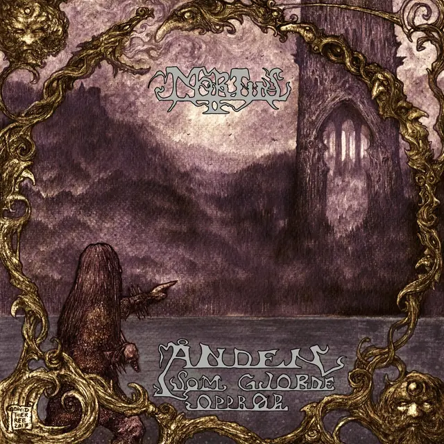
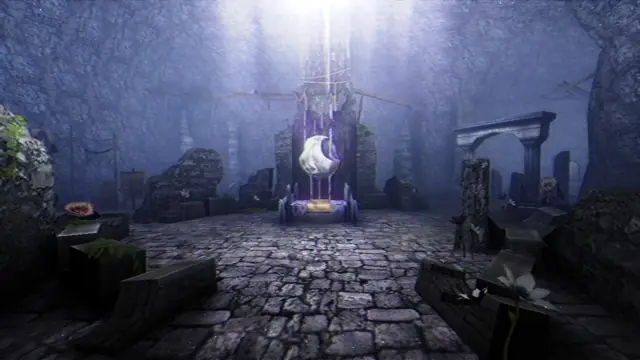
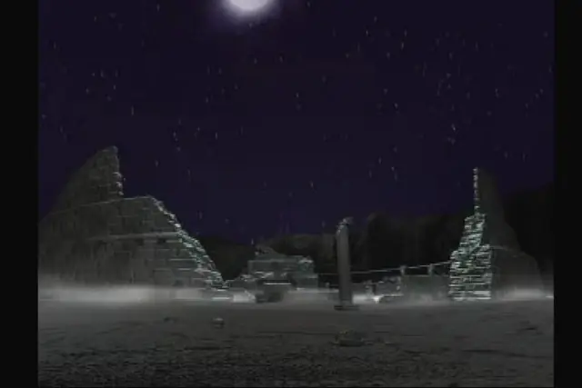
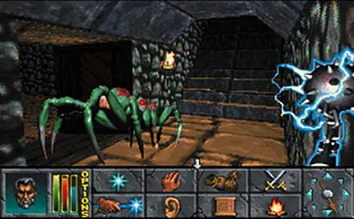
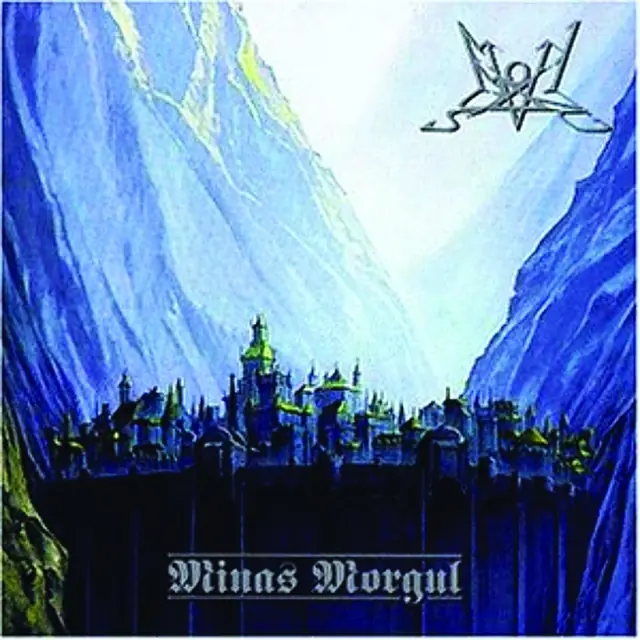
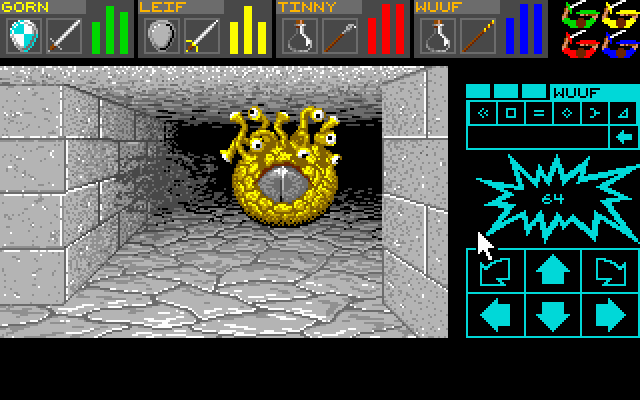
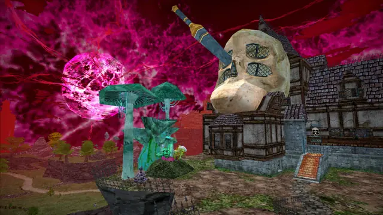
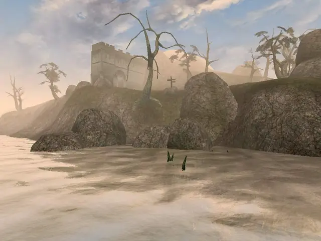
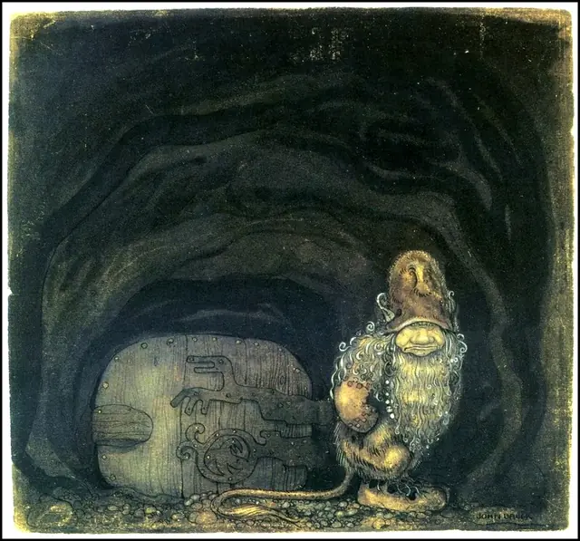
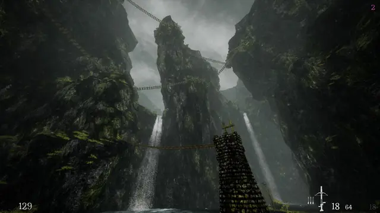
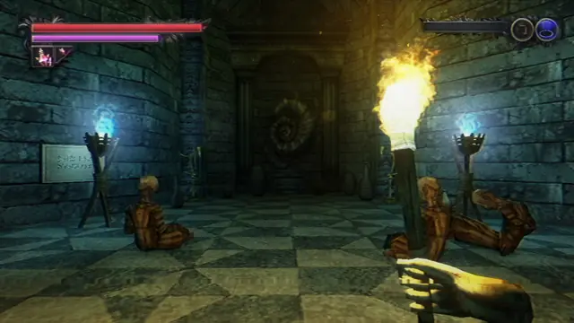
Games
- Dungeon Master
Real-time play in a first-person dungeon, with light that dims as a torch sputters.20 Study its one repeating wall.
- King's Field
FromSoftware's first game, made between March and October 1994.3 Fog, slow steps and a hostile, silent world. In 2000 FromSoftware released Sword of Moonlight in Japan, a toolkit for making games like it.4
- The Elder Scrolls II: Daggerfall
Procedurally generated and famously bigger than Britain. Daggerfall Unity has modernised its controls and graphics.23
- Shadow Tower
King's Field's moodier, darker cousin,10 closer to gritty medieval survival horror than fantasy RPG.9
- The Elder Scrolls III: Morrowind
Study how fog and strange architecture make a whole culture feel foreign. Look at the silt striders.
- Northern Journey
Painterly Nordic gorges in low-poly 3D. Study how far texture alone can go.
- Lunacid
Inspired by King's Field and Shadow Tower, which its developer found only after starting work.9 Note how its PlayStation-era limits are chosen, not forced.
- Dread Delusion
Steeped in Morrowind and King's Field, under the sickly red light of a neuron star.5 Proof the look doesn't have to be brown.
Film, art and more
- A Guide Through the Darkened Passages of Dungeon Synth
Robert Newsome's map of the scene for Bandcamp Daily, from sparse solo keyboards to symphonic pieces.13
- Dark Dungeon Music
Jordan Whiteman's history of the genre, covered here in a review and interview.
- John Bauer
His fairy-tale plates have come to stand for Sweden's ancient forests, full of trolls and wood nymphs.24 Study his dark trunks and tiny figures.
- Gustave Doré
Black metal bands have put his work on their covers.11 Study his castles and cliffs.
- Theodor Kittelsen
A Norwegian illustrator of folk tales and trolls. His drawings have been on black metal covers since 1994.11
- Organic Intelligence XXVI: Dungeon Synth
Joel McIver in The Quietus: a computer and a stock soft synth are enough, and Mortiis's 1993 demo used a $99 Roland keyboard.1
Sources
- 1Organic Intelligence XXVI: Dungeon Synth
- 2Conversations with the Ghosts of the Past
- 3King’s Field – 2001 Developer Interview
- 4Turning the dreamlike spaces of King’s Field into an exquisite corpse
- 5‘Dread Delusion’ Embraces a Different Kind of Nightmare
- 6Mortiis: From Black Metal to Dungeon Synth and Beyond
- 7The Return of Mortiis! US Tour Dates + Exclusive Interview where Mortiis talks Lords of Chaos
- 8Exploring Dungeon Synth: Music, RPGs, and Nostalgia
- 9Move Over, Dark Souls: The From Software Title Inspiring A New Wave Of Games Is King's Field
- 10Lunacid brings FromSoftware's original RPG series into the 21st century and is a perfect example of how to do PS1 nostalgia right
- 11Appropriating death: the works of Theodor Kittelsen in black metal album covers
- 12These Fonts Shred: A Typographical Survey of Heavy Metal
- 13A Guide Through the Darkened Passages of Dungeon Synth
- 14Catacomb Echoes
- 15Godot PSX Style Demo
- 16Graphics Processing Unit (GPU)
- 17Environment
- 18Lighting window reference
- 19Dread Delusion Creative Director speaks on how flying islands helped development & why PS1 games are timeless
- 20Dungeon Master, Part 2: The Playing of
- 21Old Tower: Stellary Wisdom
- 22Summoning Is the Best Tolkien-Obsessed, Anti-Fascist Metal Band in the World
- 23Revisiting The Elder Scrolls II: Daggerfall
- 24John Bauer, “I don’t think I know thee, grey dwarves! He called”, illustration for Bland tomtar och troll, 1913